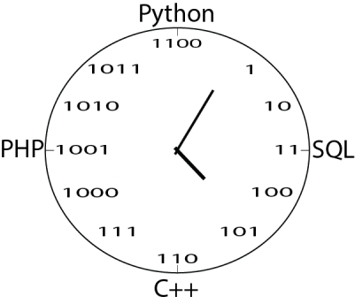

Em sua 6ª edição, o projeto A Hora do Código tem como objetivo mobilizar um grupo de alunos (bolsistas e voluntários) de tal forma que os mesmos possam organizar um conjunto de atividades ligadas à utilização de recursos computacionais avançados e em especial relacionadas às atividades de desenvolvimento de software. As atividades propostas ao longo do projeto deverão envolver os alunos no sentido de que os mesmos aprendam a aprender, que aprendam a resolver problemas e compartilhar com outros colegas tais aprendizados. Tais atividades serão realizadas horários livres de aula e nos sábados letivos previstos no calendário letivo da instituição.
O projeto também se propõe a identificador tecnologias nos quais os alunos despertam interesse em aprender e organizar oficinas e/ou minicursos com tal finalidade. Sempre que possível o projeto irá certificar os estudantes participantes das atividades para fins de computo de horas de Atividades Complementares de Curso. Os espaços de tempo do projeto também serão utilizados para mobilizar estudantes para participar de competições da área, como por exemplo, a BUGCUP1, o HackathonFW2, entre outros.